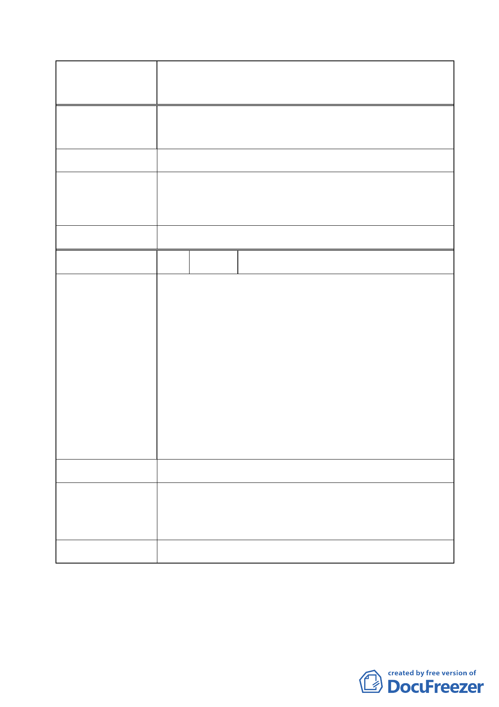

案名
變更臺北市經國七海文化園區暨週邊地區主要計
畫案
建議辦法
土地（B 區）維持「行政區」使用，以及同小段 207 地號
等 12 筆土地（T 字型道路，C 區）由「計畫道路」變更為
「行政區」，請一併送都委會再納案討論…。
同陳情理由。
市府回覆意見
有關七海文化專用區旁道路用地擬變更為行政區 1 節，本
府將專案小組建議維持道路用地及海軍司令部建議變更
為行政區等二案併陳，提請大會再討論。
委員會決議 同決議一至四。
編號
陳情理由
建議辦法
4 陳情人 財政部國有財產署北區分署
依財政部國有財產署北區分署 102 年 1 月 18 日台財產北
改字第 10200014941 號函。
陳情理由：
1.查旨揭變更都市計畫案，擬納入臺北市中山區四小段
288-2 地號國有土地（非屬原公展公告範圍）管理機關
應為財政部國有財產署，惟依修正前後對照表第 7 頁說
明內容誤載為國家安全局，爰請釐正計畫書圖內該筆國
有土地之相關登載。。
2.上述 288-2 地號國有土地現況為市定古蹟「七海寓所
（蔣經國故居）」進出道路及花圃使用，爰請臺北市政
府文化局依國有財產法第 38 條、「各級政府機關」互相
撥用公有不動產之有償與無償劃分原則」及「國有不動
產撥用要點」等相關規定辦理撥用。
同陳情理由。
市府回覆意見
委員會決議
1.臺北市中山區四小段 288-2 地號國有土地之管理機關
誤載為國家安全局，將配合修正為財政部國有財產署。
2.另查 288-2 地號土地因非屬古蹟公告範圍，故是否配合
辦理撥用事宜，市府將續行評估。
依市府回應意見辦理。
- 18 -